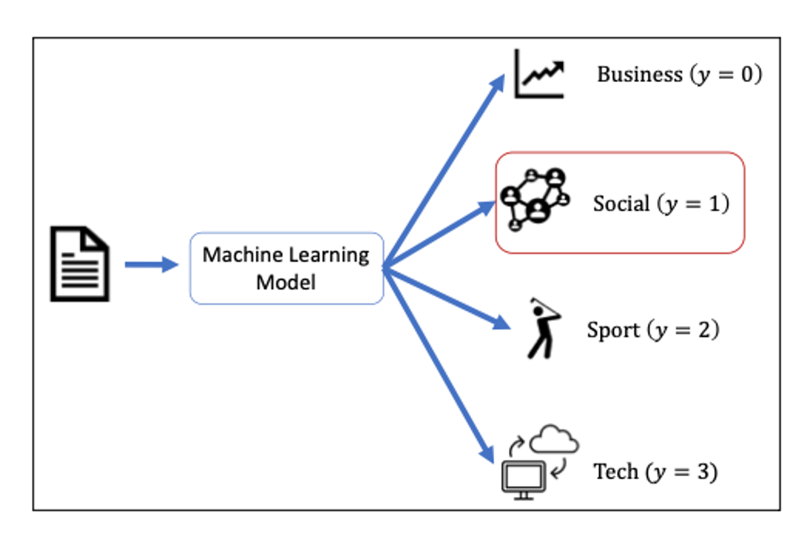
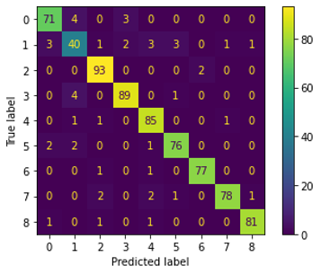

ចំណាត់ថ្នាក់ច្រើនក្រុម (Multiclass Classification)
នៅក្នុងជីវភាពរស់នៅ ការធ្វើចំណាត់ថ្នាក់ក្រុម មានករណីជាច្រើនដែលចំនួនក្រុមត្រូវកំណត់មានច្រើនលើសពី២។ ឧទាហរណ៍ដូចជា ការបែងចែកអត្ថបទជាក្រុមតាមប្រធានបទ ការធ្វើកំណត់សម្គាល់ប្រភេទសម្ភារៈ ការកំណត់ប្រភេទវត្ថុយានយន្តលើផ្លូវរបស់យានយន្តបើកដោយស្វ័យប្រវត្តិជាដើម។ ដូចទៅនឹងការធ្វើចំណាត់ថ្នាក់២ក្រុមដែរ តម្លៃនៃអថេរគោលដៅក្នុងករណីចំណាត់ថ្នាក់ច្រើនក្រុមយកតម្លៃដាច់ដូចជា{0,1,2,3,……}។ ករណីដែលអថេរគោលដៅយកតម្លៃច្រើនប្រភេទ យើងកំណត់ហៅថាចំណាត់ថ្នាក់ច្រើនក្រុម(multiclass classification)។
ក្នុងអត្ថបទនេះ យើងនឹងលើកយកការកំណត់ប្រភេទអត្ថបទតាមប្រធានបទមកបង្ហាញដើម្បីស្វែងយល់បន្ថែមពីដំណោះស្រាយក្នុងបញ្ហាចំណាត់ថ្នាក់ច្រើនក្រុមតាមរយៈ machine learning ។រូបខាងក្រោមបង្ហាញពីគោលគំនិតក្នុងការកំណត់ប្រភេទអត្ថបទតាមប្រធានបទដោយប្រើម៉ូឌែលMachine Learning។

ចំណាត់ថ្នាក់ច្រើនក្រុមដោយម៉ូឌែលលីនេអ៊ែរ
ការបង្ហាញបញ្ហាចំណាត់ថ្នាក់ច្រើនក្រុមដោយប្រើម៉ូឌែលលីនេអ៊ែរអាចធ្វើបានដូចករណីនៃ
ចំណាត់ថ្នាក់២ក្រុមដែរ គឺជាម៉ូឌែលដែលទស្សន៍ទាយប្រភេទនៃទិន្នន័យ
\[
\hat{y}\in C=\left\{0,1,\ldots,K\right\}\
\]
ដោយកំណត់យកក្រុម\(j\)ណាដែលមានតម្លៃធំបំផុតនៃផលគុណស្កាលែរវាងធាតុចូល(input)\(\pmb{x}\in\mathbb{R}^d \)និងប៉ារ៉ាម៉ែត្រម៉ូឌែល\(\pmb{w}_j\in\mathbb{R}^d\)របស់ក្រុម\( j \)នោះ ។
\[
\hat{y}=\underset{j\in C}{arg\max} {\pmb{x}^\top\pmb{w}_j}
\]
ក្នុងករណីការកំណត់ប្រភេទអត្ថបទតាមប្រធានបទ យើងអាចកំណត់ជាទម្រង់ម៉ូឌែលលីនេអ៊ែរខាងលើបានដោយ ជាឧទាហរណ៍កំណត់យក \(\hat{y}=0 \)សម្គាល់ប្រធានបទអំពី business, \(\hat{y}=1\) សម្គាល់ប្រធានបទអំពីSocial, \(\hat{y}=2\) សម្គាល់ប្រធានបទអំពីSport ជាដើម។
ដើម្បីងាយស្រួលក្នុងការបកស្រាយខាងក្រោម យើងសន្មតថា អត្ថបទនិមួយៗត្រូវបានបង្ហាញដោយវ៉ិចទ័រ\(\pmb{x}\in\mathbb{R}^d\) ដែលកំប៉ូសង់និមួយៗគឺជាប្រេកង់នៃពាក្យក្នុងវចនានុក្រមដែលមាននៅក្នុងអត្ថបទនោះ។ ដូចដែលអ្នកកត់សម្គាល់បាន បញ្ហាសម្រាប់យើងគឺថា តើនឹងត្រូវកំណត់តម្លៃនៃប៉ារ៉ាម៉ែត្ររបស់ម៉ូឌែលដោយរបៀបណា។ ក្នុងអត្ថបទនេះយើងនឹងណែនាំម៉ូឌែលតម្រែតម្រង់Logisticសម្រាប់ចំណាត់ថ្នាក់ច្រើនក្រុម។
តម្រែតម្រង់Logisticសម្រាប់ចំណាត់ថ្នាក់ច្រើនក្រុម
តម្រែតម្រង់Logisticសម្រាប់ចំណាត់ថ្នាក់ច្រើនក្រុមគឺជាម៉ូឌែលលីនេអ៊ែរមួយប្រភេទ ដែល
ប្រូបាបមានលក្ខខណ្ឌ\(p\left(\hat{y}=j|\pmb{x}\right)\)ពោលគឺប្រូបាបដែលប្រភេទនៃទិន្នន័យ\(\hat{y}=j \)ត្រូវបានទស្សន៍ទាយ ចំពោះអថេរពន្យល់\( \pmb{x} \)ត្រូវបានគណនាដូចខាងក្រោម។
\[
P\left(\hat{y}=j|\pmb{x}\right)=\frac{\exp{\left(\pmb{x}^\top\pmb{w}_j\right)}}{\sum_{j=0}^{K}\exp{\left(\pmb{x}^\top\pmb{w}_j\right)}}
\]
ដើម្បីសម្រួលក្នុងការសរសេរ នៅទីនេះយើងកំណត់សរសេរ \(a_j=\pmb{x}^\top\pmb{w}_j\) ។ ចំពោះក្រុម \(j\in C=\left\{0,1,\ldots,K\right\} \)យើងកំណត់សរសេរវ៉ិចទ័រ\(\pmb{a} \)ដែលជាតម្លៃផលគុណស្កាលែចំពោះក្រុមទាំងអស់ដោយទម្រង់ខាងក្រោម។
\[\begin{split}
\pmb{a}=\left(\begin{matrix}\begin{matrix}a_0&a_1\\\end{matrix}&\begin{matrix}\cdots&a_K\\\end{matrix}\\\end{matrix}\right)=\left(\begin{matrix}\begin{matrix}\pmb{x}^\top\pmb{w}_0&\pmb{x}^\top\pmb{w}_1\\\end{matrix}&\begin{matrix}\cdots&\pmb{x}^\top\pmb{w}_K\\\end{matrix}\\\end{matrix}\right)
\end{split}\]
ប្រូបាបមានលក្ខខណ្ឌដែលអត្ថបទ\(\pmb{x} \)ត្រូវបានកំណត់ថាក្នុងក្រុម\(j: p\left(\hat{y}=j|\pmb{x}\right)\) អាចបង្ហាញតាមរយៈអនុគមន៍ Softmax បានដូចខាងក្រោមដែល\(\pmb{a}_j\)សម្គាល់កំប៉ូសង់ទី\(j\)នៃវ៉ិចទ័រ\(\pmb{a}\)។
\[
P\left(\hat{y}=j|\pmb{x}\right)=\sigma\left(\pmb{a}\right)_j=\frac{\exp{\left(\pmb{a}_j\right)}}{\sum_{k=0}^{K}\exp{\left(\pmb{a}_k\right)}}
\]
ចំពោះប៉ារ៉ាម៉ែត្រនៃក្រុមទាំងអស់ដែលមាន បើយើងកំណត់សរសេរដោយម៉ាទ្រីស\(W\) , ប្រូបាបមានលក្ខខណ្ឌចំពោះការធ្វើចំណាត់ថ្នាក់ក្រុមនិមួយដោយ\(\pi_j\) នោះយើងអាចបង្ហាញការគណនាខាងលើបានដូចខាងក្រោម។
\[\begin{split}
\pmb{a}=\left(\begin{matrix}\begin{matrix}\pmb{x}^\top\pmb{w}_0&\pmb{x}^\top\pmb{w}_1\\\end{matrix}&\begin{matrix}\cdots&\pmb{x}^\top\pmb{w}_K\\\end{matrix}\\\end{matrix}\right)=\pmb{x}^\top W
\end{split}\]
\[\begin{split}
\left(\begin{matrix}\begin{matrix}\pi_0&\pi_1\\\end{matrix}&\begin{matrix}\cdots&\pi_K\\\end{matrix}\\\end{matrix}\right)=\left(\begin{matrix}\begin{matrix}\sigma\left(\pmb{x}^\top\pmb{w}_0\right)_0&\sigma\left(\pmb{x}^\top\pmb{w}_1\right)_1\\\end{matrix}&\begin{matrix}\cdots&\sigma\left(\pmb{x}^\top\pmb{w}_K\right)_K\\\end{matrix}\\\end{matrix}\right)
\end{split}\]
\[\begin{split}
\pmb{\pi}=\left(\begin{matrix}\begin{matrix}\pi_0&\pi_1\\\end{matrix}&\begin{matrix}\cdots&\pi_K\\\end{matrix}\\\end{matrix}\right)=\sigma\left(\pmb{x}^\top W\right)
\end{split}\]
ឧទាហរណ៍ថាចំពោះ ទិន្នន័យ\(\pmb{x}\) ប្រូបាបមានលក្ខខណ្ឌចំពោះក្រុមនិមួយៗត្រូវបានគណនានិងបានលទ្ធផល
\[
P\left(\hat{y}=0|\pmb{x}\right)=0.1,\ P\left(\hat{y}=1|\pmb{x}\right)=0.4,\ P\left(\hat{y}=2|\pmb{x}\right)=0.2,\ P\left(\hat{y}=3|\pmb{x}\right)=0.3
\]
នោះទិន្នន័យត្រូវបានទស្សន៍ទាយថាក្នុងចំណាត់ថ្នាក់ក្រុម\(\hat{y}=1\) ព្រោះប្រូបាប\( P\left(\hat{y}=1|\pmb{x}\right) \)មានតម្លៃខ្ពស់ជាងគេ។
ដើម្បីងាយស្រួលក្នុងការសរសេរនិងគណនាកម្រិតនៃភាពសាកសមរបស់ទិន្នន័យ ភាគច្រើនចំណាត់ថ្នាក់ក្រុមរបស់ទិន្នន័យត្រូវបានបង្ហាញជាទម្រង់one-hot vector។ឧបមាថាទិន្នន័យ\( \pmb{x} \)ស្ថិតនៅក្នុងក្រុម1 នោះវ៉ិចទ័រតាងចំណាត់ថ្នាក់ក្រុមរបស់វាត្រូវបានសរសេរដោយ
\[\begin{split}
\pmb{y}=\left(\begin{matrix}\begin{matrix}0&1\\\end{matrix}&\begin{matrix}\begin{matrix}0&\cdots\\\end{matrix}&0\\\end{matrix}\\\end{matrix}\right)^\top\end{split}\]
ពោលគឺទិន្នន័យស្ថិតនៅក្រុម\(j\) ត្រូវបានសរសេរដោយវ៉ិចទ័រ\( \pmb{y} \)ដែលកំប៉ូសង់ទី\(j\)របស់វាកំណត់ដោយ1 និង0 ចំពោះកំប៉ូសង់ក្រៅពីនេះ។
\[\begin{split}
y_k=\left\{\begin{matrix}
1& k=j\\
0& k\neq j
\end{matrix}\right.
\end{split}\]
កម្រិតសាកសមនៃទិន្នន័យ Likelihood
គំនិតនៃការបង្ហាញកម្រិតសាកសមរបស់ទិន្នន័យក្នុងម៉ូឌែលតម្រែតម្រង់Logisticសម្រាប់
ចំណាត់ថ្នាក់ច្រើនក្រុម គឺដូចគ្នាទៅនឹងករណីចំណាត់ថ្នាក់២ក្រុមដែរ។ ចំពោះទិន្នន័យ\(\left(\pmb{x},\pmb{y}\right)\) និងប៉ារ៉ាម៉ែត្រនៃម៉ូឌែល\(W\) កម្រិតសាកសមនៃទិន្នន័យ(Likelihood) ត្រូវបានកំណត់ដូចខាងក្រោម។
\[
{\hat{l}}_{\left(\pmb{x},\pmb{y}\right)}\left(W\right)=P\left(\hat{y}=j|\pmb{x}\right)=\pi_j
\]
ដោយប្រើទម្រង់one-hot vectorនៃចំណាត់ថ្នាក់ក្រុមរបស់ទិន្នន័យ\(\pmb{y}\in\mathbb{R}^K\)យើងអាចសរសេរដូចខាងក្រោម។
\[\begin{split}
\hat{l}_{(x,y)}(W)=\pi_j=\prod_{k=0}^{K}{\left\{\begin{matrix}
\pi_k & (y_k=1) \\
1 & (y_k=0)
\end{matrix}\right.}
=
\prod_{k=0}^{K}{\pi_k^{y_k}}
\end{split}\]
ចំពោះទិន្នន័យTrainingទាំងអស់\( \mathcal{D} \)ដែលមាន Likelihood អាចសរសេរបានក្រោមទម្រង់
\[
{\hat{L}}_\mathcal{D}\left(W\right)=\prod_{\left(\pmb{x},\pmb{y}\right)\in\mathcal{D}}{{\hat{l}}_{\left(\pmb{x},\pmb{y}\right)}\left(W\right)}
\]
ដើម្បីបញ្ចៀសនូវបញ្ហាតម្លៃតូចពេកក្នុងការគណនាជាមួយកុំព្យូទ័រ នៅទីនេះយើងសិក្សា បរមាកម្មលើតម្លៃលោការីតរបស់វា។ ការធ្វើបែបនេះមិនប៉ះពាល់ដល់ការធ្វើបរមាកម្មឡើយ ព្រោះអនុគមន៍លោការីតជាអនុគមន៍កើនដាច់ខាត។
\[
{\hat{\mathcal{L}}}_\mathcal{D}^{MLE}\left(W\right)=-\log{{\hat{L}}_\mathcal{D}\left(W\right)}=-\log{\prod_{\left(\pmb{x},\pmb{y}\right)\in\mathcal{D}}{{\hat{l}}_{\left(\pmb{x},\pmb{y}\right)}\left(W\right)}}=-\sum_{\left(\pmb{x},\pmb{y}\right)\in\mathcal{D}}{{\hat{l}}_{\left(\pmb{x},\pmb{y}\right)}\left(W\right)}
\]
ការប៉ាន់ស្មានមេគុណតម្រែតម្រង់តាម Maximum Likelihood
ចំពោះសំណុំទិន្នន័យទាំងអស់\(\mathcal{D}\)ដែលមានចំនួន\(N\) យើងកំណត់កម្រិតសាកសមនៃទិន្នន័យ(likelihood)ពោលគឺកម្រិតដែលម៉ូឌែលអាចប៉ាន់ស្មានបានត្រឹមត្រូវចំពោះគ្រប់ទិន្នន័យទាំងអស់ដោយកន្សោមខាងក្រោម។ នៅទីនេះយើងសន្មតថារបាយនៃគ្រប់ទិន្នន័យទាំងអស់គឺឯករាជ្យនិងមានឯកសណ្ឋានភាព(i.i.d : independent and identically dristributed)។
\[
{\hat{\mathcal{L}}}_\mathcal{D}\left(\pmb{w}\right)=-\log{{\hat{L}}_\mathcal{D}\left(\pmb{w}\right)}=-\sum_{i=1}^{N}\log{{\hat{l}}_{\left(\pmb{x}_i,y_i\right)}\left(\pmb{w}\right)}
\]
ការដោះស្រាយតាមរយៈវិធី SGD
ដើម្បីធ្វើអប្បបរមាកម្ម\({\hat{\mathcal{L}}}_\mathcal{D}\left(W\right)\) យើងនឹងប្រើប្រាស់វិធីSGDដែលបានសិក្សាក្នុងអត្ថបទមុន។
\[
W^{\left(t+1\right)}=W^{\left(t\right)}-\eta_t\left.\frac{\partial}{\partial W}\left\{-\log{{\hat{l}}_{\left(\pmb{x},y\right)}\left(W\right)}\right\}\right|_{W=W^{\left(\pmb{t}\right)}}
\]
\[
W^{\left(t+1\right)}=W^{\left(t\right)}+\eta_t\left.\frac{\partial}{\partial W}\log{{\hat{l}}_{\left(\pmb{x},y\right)}\left(W\right)}\right|_{W=W^{\left(\pmb{t}\right)}}
\]
ជាដំបូងយើងពិនិត្យលើអនុគមន៍ដេរីវេ \(\frac{\partial}{\partial W}\log{{\hat{l}}_{\left(\pmb{x},y\right)}\left(W\right)} \)។
\[
\log{{\hat{l}}_{\left(\pmb{x},y\right)}\left(W\right)}=\log{\left(\prod_{k=0}^{K}\pi_k^{y_k}\right)}=\sum_{k=0}^{K}{y_k\log{\pi_k}}
\]
\[
\frac{\partial}{\partial\pmb{w}_j}\log{{\hat{l}}_{\left(\pmb{x},y\right)}\left(W\right)}=\frac{\partial}{\partial\pmb{w}_j}\sum_{k=0}^{K}{y_k\log{\pi_k}}=\sum_{k=0}^{K}\frac{y_k}{\pi_k}\frac{\partial\pi_k}{\partial\pmb{w}_\pmb{j}}
\]
នៅទីនេះយើងពិនិត្យលើអនុគមន៍បណ្តាក់
\[
\pi_k=\sigma\left(\pmb{a}\right)_k\ ,\ a_j=\pmb{x}^\top\pmb{w}_j
\]
\[
\frac{\partial}{\partial\pmb{w}_j}\log{{\hat{l}}_{\left(\pmb{x},y\right)}\left(W\right)}=\sum_{k=0}^{K}\frac{y_k}{\pi_k}\frac{\partial\pi_k}{\partial\pmb{w}_j}\ =\sum_{k=0}^{K}\frac{y_k}{\pi_k}\frac{\partial\pi_k}{\partial a_j}\frac{\partial a_j}{\partial\pmb{w}_j}
\]
\[\begin{split}
=\sum_{k=0}^{K}\frac{y_k}{\pi_k}\left\{\pi_k\left(\delta_{kj}-\pi_j\right)\right\}\pmb{x} \delta_{kj}=\left\{\begin{matrix}
1 &(k=j) \\
0 &(k\neq j)
\end{matrix}\right.
\end{split}\]
\[
=\pmb{x}\sum_{k=0}^{K}{y_k\left(\delta_{kj}-\pi_j\right)}
=\pmb{x}\left(\sum_{k=0}^{K}{y_k\delta_{kj}}-\sum_{k=0}^{K}{y_k\pi_j}\right)=\pmb{x}\left(y_j-\pi_j\right)
\]
\[
\frac{\partial}{\partial\pmb{w}_j}\log{{\hat{l}}_{\left(\pmb{x},y\right)}\left(W\right)}=\pmb{x}\left(y_j-\pi_j\right)
\]
ដូចនេះ តាមរយៈវិធីSGD តម្លៃនៃប៉ារ៉ាម៉ែត្រ\(\pmb{w}_j \)នៃ\(W\)ដែលធ្វើបរមាកម្មលើតម្លៃកម្រិតសាកសមនៃទិន្នន័យត្រូវបានគណនាដោយផ្លាស់ប្តូរតម្លៃដូចខាងក្រោម។
\[
\pmb{w}_j^{\left(t+1\right)}=\pmb{w}_j^{\left(t\right)}+\eta_t\left.\frac{\partial}{\partial\pmb{w}_j}\log{{\hat{l}}_{\left(\pmb{x},y\right)}\left(W\right)}\right|_{\pmb{w}_j=\pmb{w}_j^{\left(\pmb{t}\right)}}
\]
\[
\pmb{w}_j^{\left(t+1\right)}=\pmb{w}_j^{\left(t\right)}+\eta_t\left(y_j-\pi_j^{\left(t\right)}\right)\pmb{x}
\]
នៅទីនេះ \(\pi^{\left(t\right)} \) ជាតម្លៃប្រូបាបដែលគណនាដោយម៉ូឌែលជាមួយតម្លៃប៉ារ៉ាម៉ែត្រនៅដំណាក់កាលt នៃការផ្លាស់ប្តូរតម្លៃប៉ារ៉ាម៉ែត្រ ពោលគឺ
\[
\pi^{\left(t\right)}=\sigma\left(\pmb{x}^\top\pmb{w}^{\left(t\right)}\right)
\]
។
\(\eta_t\) ជាlearning-rate និង \(y\) ជាចំណាត់ថ្នាក់ក្រុមពិតប្រាកដនៃទិន្នន័យ\(\pmb{x}\)។
ក្នុងករណីប្រើRidge Regularization កន្សោមខាងលើនឹងប្រែទៅជាទម្រង់ខាងក្រោម។
\[
\pmb{w}^{\left(t+1\right)}=\left(1-\frac{2\alpha\eta_t}{N}\right)\pmb{w}^{\left(t\right)}+\eta_t\left(y-\pi^{\left(t\right)}\right)\pmb{x}
\]
ការវាយតម្លៃ
កាលពីសិក្សាបញ្ហាចំណាត់ថ្នាក់២ក្រុម រង្វាស់សម្រាប់រង្វាយតម្លៃលើម៉ូឌែលត្រូវបានគណនា
ដោយប្រើ Accuracy, Precision, Recall, F1-score។ក្នុងករណីចំណាត់ថ្នាក់ច្រើនក្រុម តម្លៃទាំងនេះក៏ត្រូវបានប្រើដើម្បីវាយតម្លៃម៉ូឌែលដូចគ្នា។ ចំពោះ Accuracy អាចគណនាបានដោយធ្វើផលធៀបចំនួនករណីដែលម៉ូឌែលធ្វើការប៉ាន់ស្មានបានត្រឹមត្រូវ ធៀបនឹងចំនួនទិន្នន័យសរុប។ ចំពោះ Precision, Recall, F1-score នៃក្រុមនិមួយៗត្រូវបានគណនាដោយឡែកៗពីគ្នា រួចធ្វើតម្លៃមធ្យមMacro /Micro ដូចខាងក្រោម។ ជាមួយគ្នានេះការសិក្សាលើរង្វាយតម្លៃដោយប្រើ Confusion Matrix ដូចក្នុងរូបខាងក្រោមក៏ត្រូវបានប្រើផងដែរ។
\[
Macro\ Precision=\frac{Precision_0+Precision_1+\ldots+Precision_K}{K}
\]
\[
Macro\ Recall=\frac{{\rm Recall}_0+{\rm Recall}_1+\ldots+{\rm Recall}_K}{K}
\]
\[
Macro\ F1-score=\frac{F1_0+F1_1+\ldots+F1_K}{K}
\]
\[
Micro\ Precision=\frac{{\rm PA}_0+{\rm PA}_1+\ldots+{\rm PA}_K}{{\rm PB}_0+{\rm PB}_1+\ldots+{\rm PB}_K}\ \ ,\ \ {\rm Precision}_k=\frac{PA_k}{PB_k}
\]
\[
Micro\ Recall=\frac{{\rm RA}_0+{\rm RA}_1+\ldots+{\rm RA}_K}{{\rm RB}_0+{\rm RB}_1+\ldots+{\rm RB}_K}\ \ ,\ \ {\rm Recall}_k=\frac{RA_k}{RB_k}
\]
\[
Micro\ F1-score=\frac{FA_0+FA_1+\ldots+FA_K}{FB_0+FB_1+\ldots+FB_K},\ \ {F1-score}_k=\frac{FA_k}{FB_k}
\]
